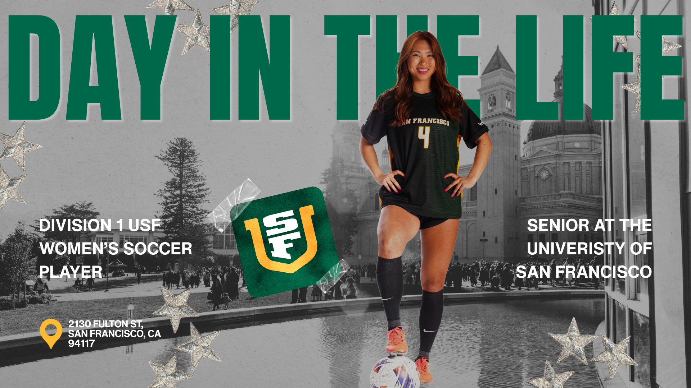

Hello friend! My name is Ella, and I’m from Seattle, Washington. I started playing soccer at age 4, moving from rec league to club, then high school, and now Division 1 college soccer at the University of San Francisco. Over the years, I’ve learned a lot about the game, the recruiting process, and what it really takes to succeed. When I was in high school, I struggled to find guidance or reliable resources about what college soccer life was actually like. Most blogs and videos were either too short or outdated, and figuring out the right fit felt overwhelming.
Back in 2022, I had to do a lot of research to find the perfect fit. It can be daunting and stressful, especially not having simple resources to help you make such a big decision.
Now, as a senior, I want to give back to the soccer community. Through coaching club teams in the Bay Area, hosting alumni Q&As, and mentoring youth athletes one-on-one, I’ve seen firsthand the need for honest, practical insight. This blog combines all of that experience to give younger athletes a glimpse into a collegiate player’s day-to-day training, recovery, off-time, and snacks that fuel us through school and matches.
Wherever you are in your soccer journey, we all share a love for the game, and I hope you find something useful here. Feel free to reach out with questions or comments as I’d love to help!